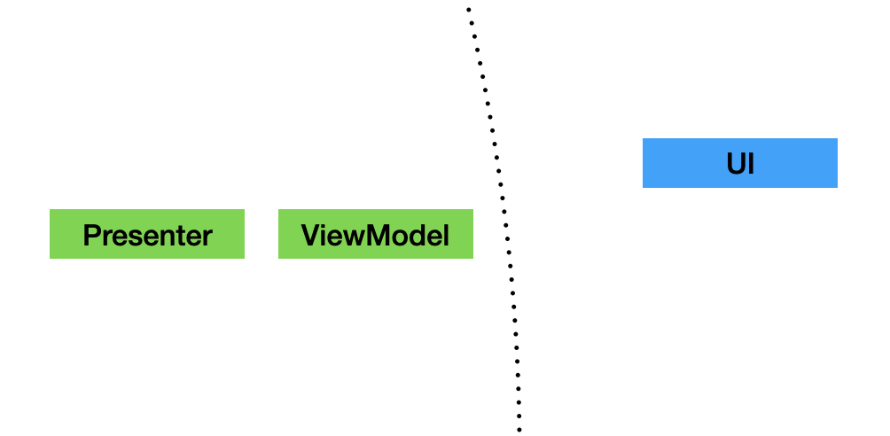
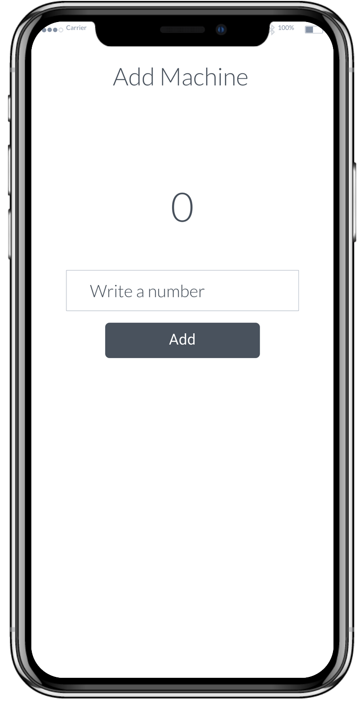

Clean Framework is a toolkit of classes and implementations that help any developer create a layered architecture on any app, following the principles of Clean Architecture from Uncle Bob (Robert Martin).
The Layers
To understand the components, first we have to talk about the layers, which are just a way to group your code to avoid interdependencies and to separate concerns.
The following diagram explains how the Clean Architecture proposes the implementation of the layers.

The idea of layering the architecture to separate the domain logic from the implementation details is not recent, and some other approaches have also been proposed (like the Hexagonal Architecture). Bob Martin took good ideas from the existing proposals, so some of the terms may seem familiar.
Entities Layer
The core of your app should exist within this layer. Here we have Entity instances that hold the state of all your features. These entities are immutable and should be free of any external code, they should not care about databases, UI, or services. If you are familiar with Domain Driven Design, this is considered your Domain data.
Use Cases Layer
The Use Case is an object that handles the data in the Entities and redirects the flows of data. Use Cases will hold most of the business logic of your features.
Use Cases handle two classes, Input and Output, which move data inside or outside respectively, they are very similar to DDD Events. The next layer can only use these components to send and receive data from the Entities. Since they are simple PODOs (Plain Old Dart Objects), they are completely agnostic from the implementation of the outside layer, and this means the Use Case will usually interact with any type of object without worrying about the details.
To interact with the Outputs and Inputs, Use Cases use requests and filters, and these interactions can be synchronous or subscriptions.
Adapters Layer
The goal of this layer is to translate the Inputs and Outputs from the Use Case into more specific messages for specific destinations. These components have a similar function than the BDD Adapter. We have to main components, the Presenter and the Gateway
Presenter
It's job is to translate Outputs into ViewModels, which are contain data and behavior (in the form of callbacks). This class will hold most of your UI logic that is not business related, like navigation.
Presenters will interact with providers of Use Cases to subscribe to a specific Output, so when that output gets updated, we can schedule a refresh on the UI side. Once the Presenter receives the updated Output, it will create a new View Model to be processed by the UI.
Gateway
When you need external data from sources like REST servers, databases, hardware, cache, etc. Use Cases will send requests with an specific Output. This message will be listened by a Gateway, which translates the Output data into a request that can be processed by the next layer.
There are two types of Gateway, depending on how you need the response to be delivered. The base Gateway class handles requests and waits for a response on the same interaction, blocking the execution until a response or an error is received.
The other type is the WatcherGateway, which will create a subscription. Once the result is received and sent back to the UseCase, it will keep listening for subsequent responses, which are sent to the Use Case through the Input listener.
External Interfaces Layer
This is where code from libraries and dependencies interacts with your features. Waits for Requests to happen and then process them depending on its type. Clean Framework include some ready-to-use default implementations to work with Firebase, GraphQL and REST services.
The UI layer is considered a type of External Interface layer since it also relies on messages to an adapter (the Presenter) to send and receive state changes from the entities.
To start using the Clean Framework components, you need to add the library on the pubspec.yaml of the project. Use the latest version available.
dependencies:
clean_framework: ^1.1.0
Project Structure
We suggest you organize your app into Features, with the assumption that features don't depend on each other. The goal should be to be able to delete a feature completely and don't break any code.
Each feature could be organized in this way:
lib
providers_loader.dart
features
my_new_feature
domain
my_new_feature_usecase.dart
my_new_feature_entity.dart
my_new_feature_outputs.dart
my_new_feature_inputs.
presentation
my_new_feature_presenter.dart
my_new_feature_view_model.dart
my_new_feature_ui.dart
external_interfaces
my_new_feature_gateway.dart
Notice that the name of the feature is a prefix for all the files inside. We prefer this naming convention so they are easier to idenfiy on searches, but you are free to follow any convention that suits your need.
The folder structure is also a suggestion, you can add multiple layers if the feature begins to grow and have multiple screens and interactions.
The Providers
Use Cases, Gateways and External Interfaces are instances of classes that are not Flutter Widgets, so they are not dependant on the Flutter Context. To have access to them, you can "publish" them using the Providers pattern.
If you notice on the files list shown above, outside the features folder we have a file where we list all the providers used on the app. For large projects this is probably not the best idea, since this file can be long and bloated, so probably splitting the providers by feature could work better.
This is an example on how this file can be coded:
final myNewFeatureUseCaseProvider =
UseCaseProvider<MyNewFeatureEntity, MyNewFeatureUseCase>(
(_) => LastLoginUseCase(),
);
final myNewFeatureGatewayProvider = GatewayProvider<MyNewFeatureGateway>(
(_) => MyNewFeatureGateway(),
);
void loadProviders() {
myNewFeatureUseCaseProvider.getUseCaseFromContext(providersContext);
MyNewFeatureGatewayProvider.getGateway(providersContext);
restExternalInterface.getExternalInterface(providersContext);
}
Clean Framework uses Riverpod for the Providers behavior, so you can understand why the providers are global instances. For anyone not familiar to how Riverpod works, this might seem innapropiate, specially comming from a strict OO formation. Justifying why this is useful and desirable, please refer to the Riverpod documentation, since the creator already did a great job explaining this approach.
Providers create instances lazyly, but some of the listeners need to be connected before use cases make any request. That is why we use a global function to "touch" all gateway and external interfaces providers to ensure they are created when the app starts.
The last consideration is to remember to use the function on the main function:
void main() {
loadProviders();
runApp(MyApp());
}
Lets discuss in more detail the components of the UI Layer

As mentioned on the previous topic, the UI component lives on the most external layer of the architecture. It means that it is related to specific libraries that conform the frontend of the application, in our case, the Flutter widgets libraries.
When building an app using the Clean Framework classes, we try to separate as much as possible any code that is not related to pure UI logic and put that on the Presenter (to send and receive data from internal layers) and the Use Case (the normal location for business logic).
UI is a class that extends from Stateless Widget. It will be very rare that a Stateful Widget is needed, since the state provided breaks the layer rules. Try to always think on ways the UI widgets without the need for Stateful Widgets.
All UI implementations require at least one View Model to fetch data from the entities. This data comes from Use Case Outputs, which Presenters receive and translate as needed.
The feature you code can be expresed into multiple screens presented to the user, and even include small widgets that are inserted in other screens. These are your entry points to the feature, and as such, will require for the UI to listen to the state changes of the feature's Use Case through its Outputs. In other words, Use Cases can have multiple Outputs, that can have relationships with many View Models through the Presenters.
View Models are immutable classes, almost pure PODO's (Plain Old Dart Objects). We try to make them as lean as possible, because its only responsibility is the passing of digested data fields into the UI object.
They tend to have only Strings. This is intentional since the Presenter has the responsibility of any formating and parsing done to the data.
Finally, the Presenters purpose is to connect and listen to Use Case Providers to interact with the Use Case instance and pass messages for user actions done on the UI (through callbacks on the View Model) and also to trigger rebuilds on the UI when the state changes causes a new Output to be generated. This will be explained in detail on the following sessions, so for now just asume the Presenters associate with only one type of Output.
The most important job of the Presenter is to translate an Output instance and create a new View Model everytime the Output is received.
Testing and Coding the UI Layer
After a feature folder is created, any developer will probably try to start adding Flutter Widgets to build up the code requirements. This framework is flexible enough to allow you to start coding components that don't require to have any access or even knowledge of any possible dependency (databases, services, cache, etc), because those concerns belong to other layers.
The simplest way to start working on a new feature is to first decide how many UI elements will be required to complete the implementation of the feature. For the sake of simplicity we are going to considering only one widget for the single screen of the new feature.
Positive : While working on this codelab, we will be creating the code by using TDD so we can focus on stablishing the desired outcome before explaining the code that produces it.
The feature requirement
We are going to code a very simple feature which can be explained in a few Gherkin scenarios:
Given I have navigated to the Add Machine feature
Then I will see the Add Machine screen
And the total shown will be 0.
Given I opened the Add Machine feature
When I write a number on the number field
And I press the "Add" button
Then the total shown will be the entered number.
Given I have entered a number on the Add Machine feature
When I write another number and press "Add"
Then the total shown will be the sum of both numbers.
Given I have added one or more numbers on the Add Machine feature
When I navigate away and open the feature again
Then the total shown is 0.
And this is the design of the page, which we have as reference, but the scope of the codelab won't be to focus on completing the code to reflect exactly the appearance, it will be up to you to finish the implementation.

Negative : These are not the only scenarios that should exist, since we are not covering possible error scenarios, like when the user adds no input at all, or tries to write something that is not a number. We leave the gaps of behavior out to be covered as an additional exercise for the developers.
The UI component test
UI components are extensions of Flutter Widgets, so this means the we have to use a Widget Tester. Our goal is to confirm that the data is retrieved correctly from the view model.
This is how our basic test looks like:
test/features/add_machine/presentation/add_machine_ui_test.dart
void main() {
uiTest(
'AddMachineUI unit test',
context: ProvidersContext(),
builder: () => AddMachineUI(),
verify: (tester) async {
expect(find.text('Add Machine'), findsOneWidget);
final sumTotalWidget = find.byKey(Key('SumTotalWidget'));
expect(sumTotalWidget, findsOneWidget);
expect(find.descendant(of: sumTotalWidget, matching: find.text('0')), findsOneWidget);
},
);
}
After creating the initial blank project (using ‘flutter create' for instance), you can add this test under the suggested path (features/add_machine/presentation).
Negative : Be aware that TDD rules should cause the developer to not write more code than what is needed in order to make the test pass, but recreating the actual process will be lengthy for this codelab. We are oversimplifying the process here.
Now, to explain the code:
- Notice how we are using our own "tester" component, the uiTest function. This helper uses a Widget tester internally, but also helps on the setup of a MaterialApp with a proper provider context. The context allows the override of already defined providers if needed.
- The builder creates an instance of a class that extends from the Clean Framework UI abstract class.
- Verify is a function parameter to attach all the expects and actions done normally on widget tests.
The test is confirming that the first Gherkin scenario happens correctly, but of course the test cannot pass until we have coded the actual UI class. The first piece of code we have to provide is precisely this UI implementation.
But in practice, we not only need that. UI is coupled to a valid ViewModel, which gets translated from a specific Output inside a Presenter. So lets create the minimal code on these classes to make the test pass:
lib/features/add_machine/presentation/add_machine_ui.dart
class AddMachineUI extends UI<AddMachineViewModel> {
AddMachineUI({required PresenterCreator<AddMachineViewModel>? create})
: super(create: create);
@override
Widget build(BuildContext context, AddMachineViewModel viewModel) {
return Column(children: [
Text('Add Machine'),
Container(
key: Key('SumTotalWidget'),
child: Text(viewModel.total),
),
]);
}
@override
create(PresenterBuilder<AddMachineViewModel> builder) {
throw UnimplementedError();
}
}
lib/features/add_machine/presentation/add_machine_view_model.dart
class AddMachineViewModel extends ViewModel {
final String total;
AddMachineViewModel({required this.total});
@override
List<Object?> get props => [total];
}
Let's review the code so far:
- The UI class specifies by generics the usage of a AddMachineViewModel. This way the class can have access to any field of the model.
- A constructor is provided to accept a creator function. This is normally not needed. The "normal" implementation instanciates the proper presenter on the create override. But to make the test pass we can have a presenter that doesn't use a Use Case provider, but builds a static view model instead. This is useful for unit tests that use fake presenters.
- Since the presenter has a mocked behavior, the actual class is defined on the test file, and the create override is left as is (it will never be called on execution).
Now let's look at the necessary changes to the test itself:
test/features/add_machine/presentation/add_machine_ui_test.dart
void main() {
uiTest(
'AddMachineUI unit test',
context: ProvidersContext(),
builder: () => AddMachineUI(
create: (builder) => AddMachinePresenter(builder: builder),
),
verify: (tester) async {
expect(find.text('Add Machine'), findsOneWidget);
final sumTotalWidget = find.byKey(Key('SumTotalWidget'));
expect(sumTotalWidget, findsOneWidget);
expect(find.descendant(of: sumTotalWidget, matching: find.text('0')),
findsOneWidget);
},
);
}
class AddMachinePresenter
extends Presenter<AddMachineViewModel, AddMachineUIOutput, UseCase> {
AddMachinePresenter({
required PresenterBuilder<AddMachineViewModel> builder,
}) : super(provider: addMachineUseCaseProvider, builder: builder);
@override
AddMachineViewModel createViewModel(UseCase<Entity> useCase, output) =>
AddMachineViewModel(total: output.total.toString());
AddMachineUIOutput subscribe(_) => AddMachineUIOutput(total: 0);
}
class AddMachineUIOutput extends Output {
final int total;
AddMachineUIOutput({required this.total});
@override
List<Object?> get props => [total];
}
final addMachineUseCaseProvider = UseCaseProvider((_) => UseCaseFake());
The Presenter, Output and UseCaseProvider are using as much fake data as possible to control the outcome of the test.
Positive : We use to write any mocks and fakes in the test file that uses them, and try to not share them, since scenarios change over time and trying to refactor all the helpers and derivates can be a complex and time-consuming task. Projects benefit more from fast unit tests that can be changed easily over time. If this doesn't fit your company policy, feel free to adapt the implementation to your needs.
That's it for this lesson, on the next one we will finish properly the Presenter implementation and this time work with a "dumb" Use Case with minimal business logic.